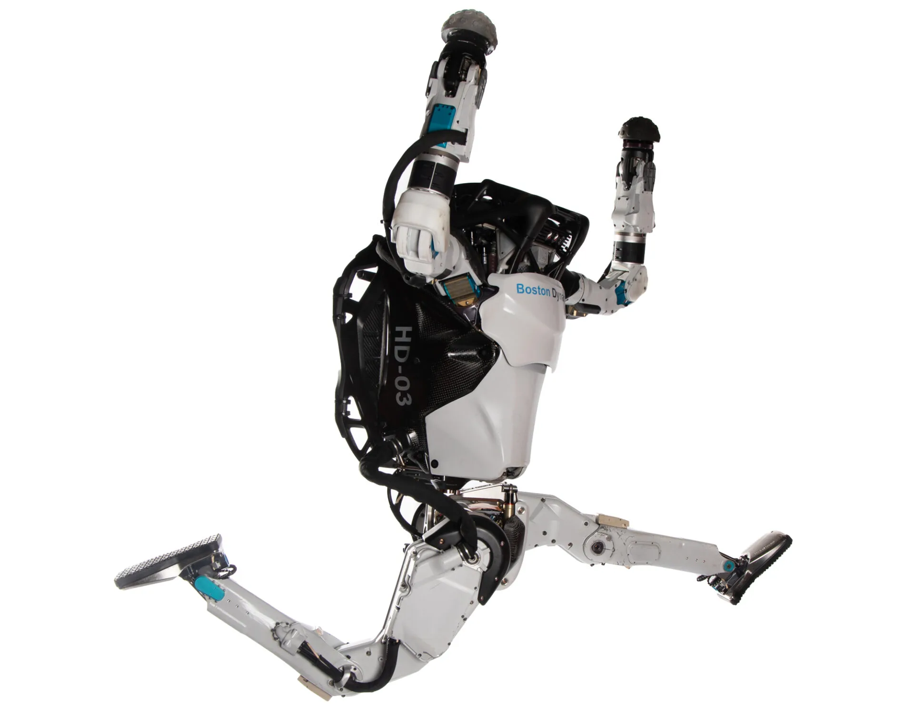

Atlas es un prodigio de la ingeniería desarrollado por Boston Dynamics. Con una estatura de 1.8 metros y un peso de 84 kilogramos, este robot humanoide está equipado con 28 articulaciones hidráulicas y una serie de sensores que le permiten percibir su entorno y moverse con sorprendente precisión. Desde caminar y correr hasta realizar acrobacias, Atlas desafía los límites de lo que creíamos posible para una máquina.
Introducción
En el fascinante mundo de la robótica, Boston Dynamics ha destacado como una de las compañías líderes en innovación. Sus creaciones, reconocidas por su asombrosa capacidad de movimiento, han cautivado a audiencias de todo el mundo. Entre sus creaciones más emblemáticas se encuentra Atlas, un robot bípedo capaz de realizar hazañas que antes solo eran posibles en la ciencia ficción.
¿Qué es Atlas?
¿Qué puede hacer Atlas?
Las habilidades de Atlas son verdaderamente impresionantes. Entre las tareas que puede realizar se incluyen:
- Caminar sobre terrenos irregulares
- Subir escaleras
- Abrir puertas
- Manipular objetos
- Saltar obstáculos
- Realizar volteretas
¿Cómo funciona Atlas?
El funcionamiento de Atlas es posible gracias a una combinación sinérgica de hardware y software de vanguardia. Sus articulaciones hidráulicas proporcionan la potencia y la fuerza necesarias para realizar movimientos fluidos, mientras que sus sensores le permiten interactuar con el entorno de manera inteligente. Todo esto es controlado por un avanzado software que procesa la información sensorial y genera los movimientos adecuados para cumplir con las tareas asignadas.
Implicaciones del Robot Atlas
El desarrollo de robots como Atlas tiene un impacto significativo en diversos campos:
- Industria: Potencial para realizar tareas peligrosas o repetitivas en entornos industriales.
- Logística: Capacidades para el transporte y la distribución eficiente de mercancías.
- Salud: Asistencia a personas con discapacidades y rehabilitación.
- Exploración espacial: Utilización en la exploración de entornos hostiles como planetas.
El futuro de la robótica
El avance continuo en la tecnología de robótica, ejemplificado por creaciones como Atlas, señala un emocionante futuro para este campo. Es probable que en los próximos años veamos la llegada de robots aún más avanzados, capaces de realizar tareas cada vez más complejas y de impactar profundamente en nuestras vidas y en la sociedad en general.